sir & star

 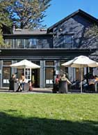
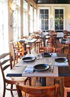
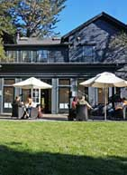
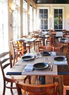
Sir and Star takes its name from the intersection where it sits at Sir Francis Drake Boulevard and Star Route One. Previously known as The Olema Inn and painted bright white, it's new owner Margaret Gradé has turned it into something more simple with the exterior painted in Benjamin Moore's Black Panther. The trim is subtly different, with more sheen to show detail.
Simple black glazed Heath Ceramic plates are on butcher block paper complemented by 24" Orkney linen napkins from localMarin designer, Tricia Rose.
For special events, the paper is replaced by Tricia's Rough Linen tablecloths.
The waitstaff wears gray wool Filson vests while Sir and Star owner Margaret Gradé is often seen wearing one of her many Rough Linen Pinafores.
Sir and Star — http://sirandstar.com/
 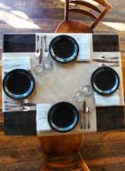
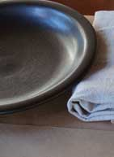
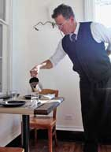
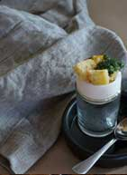
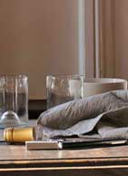
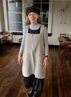
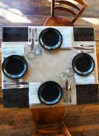
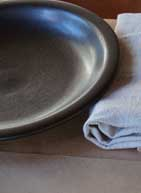
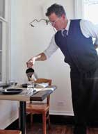
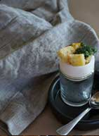
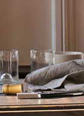
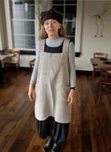